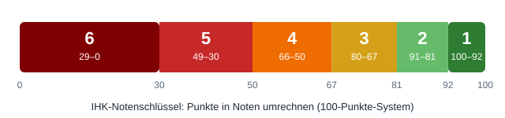

IHK: 100 Punkte in Noten umrechnen (Tabelle)
In IHK-Abschlussprüfungen werden Leistungen mit einem 100-Punkte-Schlüssel bewertet. Wir betreiben mit unserem kostenlosen Notenrechner-Portal Rechner für Noten und Punktesysteme – auf dieser Seite finden Sie die komplette IHK-Tabelle, die Prozentlogik dahinter und ein durchgerechnetes Beispiel, damit Sie IHK-Punkte in Noten umrechnen können wie die Prüfer.
Das Problem: Wo liegt meine Note?
Nach der Prüfung steht eine Punktzahl auf dem Bogen – doch was bedeutet sie? Die IHK arbeitet mit festen Punktegrenzen, die seit Jahren unverändert gelten. Wer sie kennt, weiß sofort, ob er bestanden hat, welche Note ihn erwartet und wie viel Puffer zur nächsten Grenze bleibt. Wer sie nicht kennt, rätselt unnötig oder – schlimmer – verlässt sich auf Gerüchte über „Rundungen“, die es nicht gibt.
Die IHK-Tabelle: 100 bis 0 Punkte
| Punkte | Prozent | Note | Bezeichnung |
|---|---|---|---|
| 100–92 | 100–92 % | 1 | sehr gut |
| 91–81 | 91–81 % | 2 | gut |
| 80–67 | 80–67 % | 3 | befriedigend |
| 66–50 | 66–50 % | 4 | ausreichend |
| 49–30 | 49–30 % | 5 | mangelhaft |
| 29–0 | 29–0 % | 6 | ungenügend |
Die Logik ist prozentual: Die erreichte Punktzahl entspricht dem Anteil an der maximalen Leistung. Die Notengrenzen liegen bei 92, 81, 67, 50 und 30 Punkten. Entscheidend: Es zählt der tatsächlich erreichte Wert – es wird weder auf- noch abgerundet.

Durchgerechnete Beispiele
58 Punkte entsprechen 58 % der Maximalleistung. Die Grenze zur Note 4 („ausreichend“) liegt bei 50 Punkten, die Grenze zur Note 3 („befriedigend“) bei 67 Punkten. Da 50 ≤ 58 < 67 gilt, lautet das Ergebnis: Note 4, „ausreichend“ – und damit bestanden. Der Abstand zur Durchfallgrenze beträgt 8 Punkte (58 − 50 = 8), zur nächstbesseren Note dagegen 9 Punkte (67 − 58 = 9). Ein knappes, aber sicheres Bestehen.
91 Punkte liegen einen einzigen Punkt unter der Einsergrenze von 92. Das Ergebnis: Note 2 („gut“) – obwohl rechnerisch nur ein Punkt zur Bestnote fehlt. Der Fall zeigt, wie schmal der Einserbereich ist: Er umfasst nur 9 Punkte (100–92), während der Zweierbereich 11 Punkte breit ist (91–81). Wer seine Punktzahl kennt, sieht sofort, wie viel zum nächsten Notensprung fehlt.
Stolperfalle: Grenzen und Rundung
Eine zweite Falle sind die ungleichen Intervallbreiten: Der Einserbereich umfasst nur 9 Punkte (100–92), der Dreierbereich dagegen 14 Punkte (80–67). Wer mit 91 Punkten eine 2 erhält, ist nur einen einzigen Punkt von der 1 entfernt – wer mit 80 Punkten eine 3 erhält, braucht dagegen zwölf Punkte mehr für die 2. Die Abstände zur nächstbesseren Note sind also je nach Bereich sehr unterschiedlich.
Häufige Fragen
Ab wie vielen Punkten habe ich die IHK-Prüfung bestanden?
Mit 50 Punkten („ausreichend“) haben Sie bestanden. Unter 50 Punkten – also ab 49 Punkten abwärts – lautet das Ergebnis „mangelhaft“ beziehungsweise „ungenügend“. Die 50-Punkte-Grenze muss exakt erreicht werden.
Wird bei der IHK auf- oder abgerundet?
Weder noch. Es zählen die tatsächlich erreichten Punkte. 49,5 Punkte bleiben „mangelhaft“, 91,5 Punkte bleiben „gut“. Eine Rundung auf ganze Noten oder auf die Bestehensgrenze findet im IHK-Schlüssel nicht statt.
Wie viele Punkte brauche ich für eine 1 bei der IHK?
Für die Note 1 („sehr gut“) brauchen Sie mindestens 92 Punkte. Der Einserbereich ist mit 9 Punkten der schmalste aller Bereiche – schon 91 Punkte ergeben „nur“ eine 2.
Gilt der Schlüssel für alle IHK-Prüfungen?
Der 100-Punkte-Schlüssel mit den Grenzen 92/81/67/50/30 ist der bundesweit einheitliche Standard für IHK-Abschluss- und Zwischenprüfungen. Details zu Sonderregelungen einzelner Prüfungen finden Sie in Ihrer Prüfungsordnung – die Punkteskala selbst ist jedoch überall gleich.
Gilt der Schlüssel auch für die Zwischenprüfung?
Ja. Der 100-Punkte-Schlüssel mit den Grenzen 92/81/67/50/30 gilt für Abschluss- und Zwischenprüfungen gleichermaßen. Auch dort brauchen Sie 50 Punkte zum Bestehen – was bei nicht bestandenen Bereichen möglich ist, erklärt unsere Seite zur mündlichen Ergänzungsprüfung.
IHK-Punkte sofort in Noten umwandeln
Die Punktzahl in unseren kostenlosen Rechner eingeben – und sofort Note und Bestehensstatus sehen.